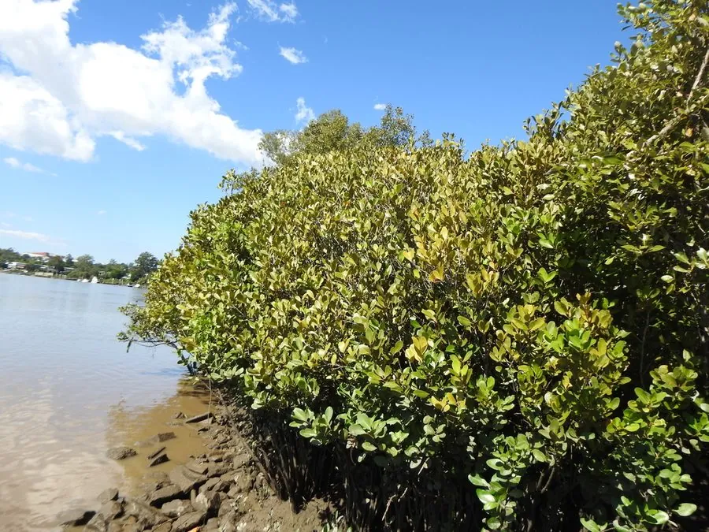

水生植物 · 植物界
桐花树 Aegiceras corniculatum

报春花科桐花树属常绿灌木或小乔木，红树林先锋树种，叶革质、花白色，果实胎生，分布于中国南方海岸滩涂。
- 分类
- 门被子植物门纲木兰纲目杜鹃花目科报春花科属桐花树属
- 栖息环境
- 热带、亚热带海岸潮间带的泥滩，耐盐、耐淹
- 地理分布
- 中国南部沿海、东南亚及澳大利亚北部
- 保护级别
- 暂无评估
物种志
桐花树为报春花科桐花树属的常绿灌木或小乔木，高 2–4 米，树皮灰褐色，多分枝。叶片互生，革质，倒卵形或椭圆形，长 5–10 厘米，表面深绿色、有光泽，背面密生黑色腺点。花小，白色或淡黄色，伞形花序，花期 1–4 月；果实为蒴果，圆柱形，种子在果实内萌发，形成胎生苗。
桐花树分布于中国南部、东南亚和澳大利亚北部的红树林滩涂，是红树林的先锋树种之一，喜温暖、盐渍和潮间带淤泥环境，耐盐、耐淹。它根系发达，能固滩护岸，为鱼虾和鸟类提供栖息地；树皮含鞣质，可提取栲胶。栽培以胎生苗和种子繁殖为主，需在潮间带种植；由于围垦和污染，红树林面积下降，应加强保护。
形态与习性
- 株高2–4 米，多分枝
- 叶片倒卵形，革质，背面有黑色腺点
- 花期1–4 月，花小、白色
- 果实圆柱形蒴果，种子胎生
- 耐盐耐盐、耐淹，生于潮间带
- 繁殖胎生苗、种子繁殖
- 生态红树林先锋树种，固滩护岸
- 主要用途护岸、栲胶原料、生态观光
趣味知识
- 桐花树是红树林的先锋树种，能在潮间带泥滩上率先定居。
- 它的种子在果实内萌发，形成胎生苗，落到泥中即可扎根。
- 桐花树的花白色、成簇开放，花期正值冬末春初。